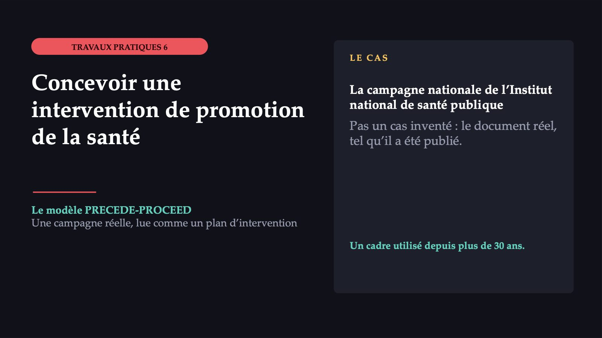
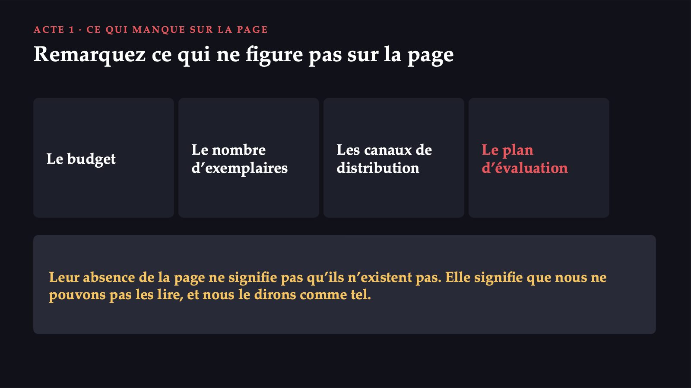
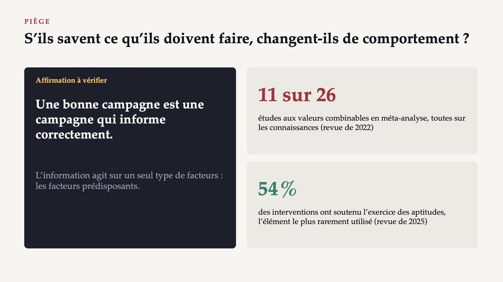
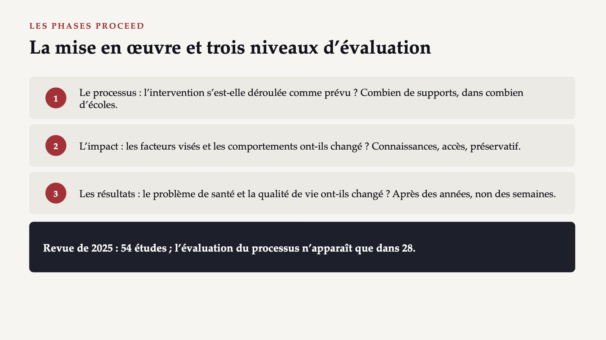
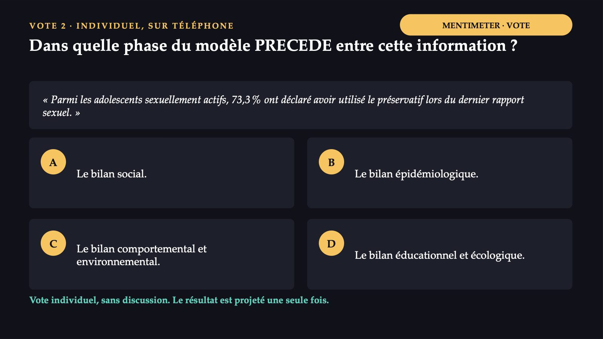
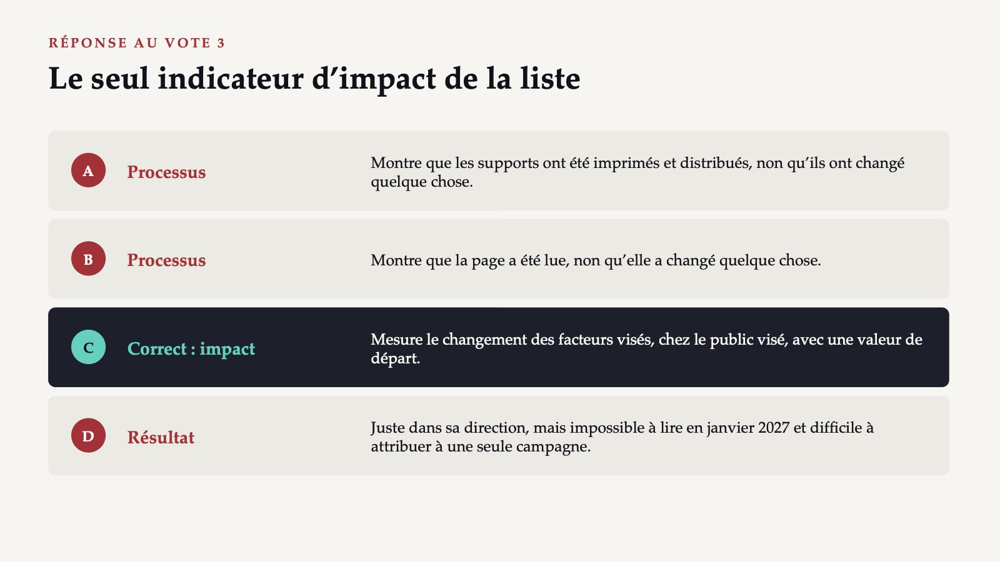
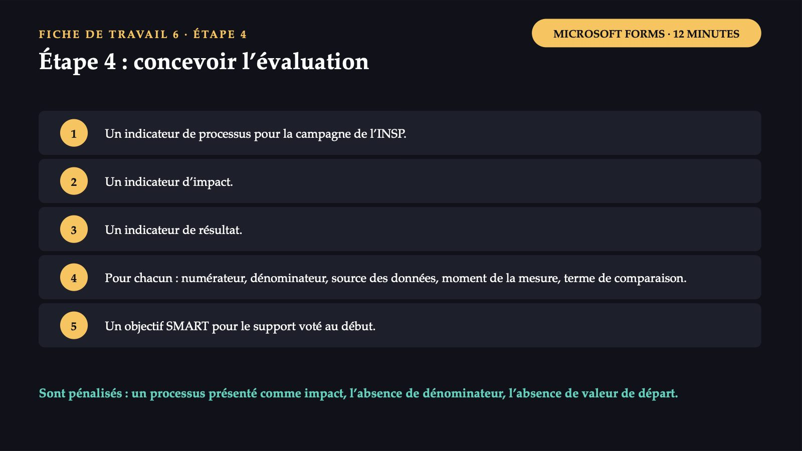
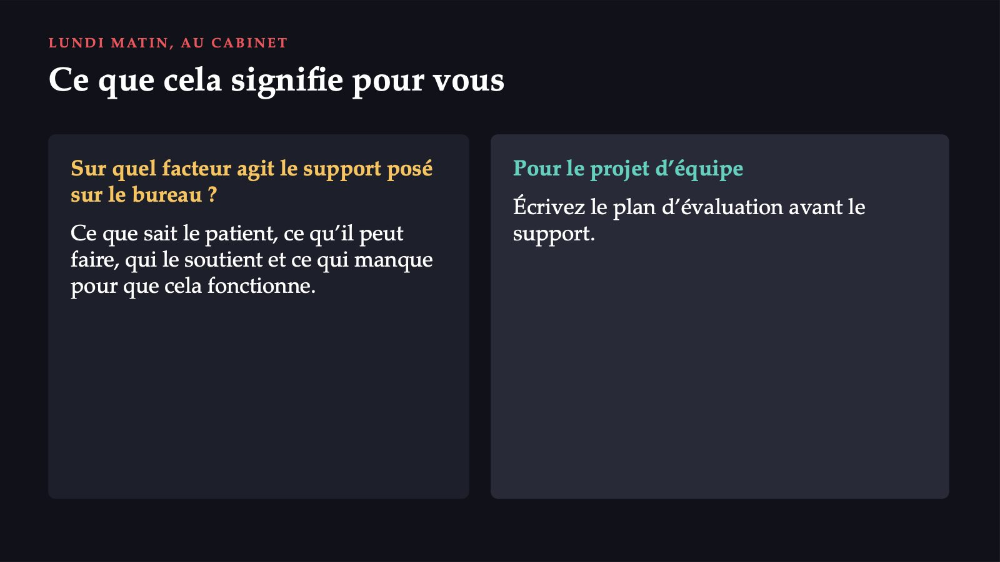

Concevoir une intervention de promotion de la santé

1 / 30Le 2 novembre 2026, l’Institut national de santé publique a annoncé une campagne nationale pour la santé de la reproduction, adressée en premier lieu aux adolescents et aux jeunes. La séance n’invente pas de cas : le cas est la campagne elle-même. Nous la lisons comme le plan d’une intervention, avec un cadre utilisé depuis plus de 30 ans.
Ce que dit la page de la campagne
![ACTE 1 · LA PAGE DE LA CAMPAGNE Ce que dit la page de la campagne Deux objectifs Information et décisions responsables ; sensibilisation à l’accès équitable aux informations et aux services. Quatre groupes cibles Les adolescents et les jeunes ; les femmes des groupes vulnérables ; la population générale ; les professionnels de santé. Six recommandations Sources médicales fiables ; méthode contraceptive efficace ; préservatif ; vaccination anti-HPV ; dépistage ; conseil et planification familiale. 26,6 % lycéens ayant eu des rapports sexuels (YRBSS) 9,1 % enfants nés de mères de moins de 20 ans (INS, 2025) 574 cas de syphilis en 2024](diapozitive/LP06/002.jpg) 2 / 30
2 / 30En novembre et décembre 2026, l’Institut national de santé publique mène une campagne nationale sur la santé de la reproduction, avec les directions de santé publique. La page énonce deux objectifs et quatre groupes cibles, et les recommandations de l’Institut sont au nombre de six. Elle s’appuie sur trois séries de données : 26,6 % des lycéens disent avoir eu au moins une fois des relations sexuelles ; en 2025, 13 224 des 145 725 enfants nés vivants, soit 9,1 %, avaient une mère de moins de 20 ans ; en 2024, 574 cas de syphilis ont été déclarés.
Ce que chaque support essaie de changer
![ACTE 1 · LES NEUF SUPPORTS Ce que chaque support essaie de changer L’infographie « Sarcina la adolescente » chiffres et mesures à trois niveaux La brochure sur la contraception démonte des mythes La brochure pour les parents dix conseils Le dépliant « Tu decizi! » répliques à exercer L’affiche sur l’abstinence « 3 din 4 adolescenți nu și-au început viața sexuală în liceu » ; « Atenție la alcool… » L’affiche sur les droits information, consentement L’affiche sur les infections chiffres et prévention L’affiche sur les méthodes contraceptives neuf méthodes L’affiche sur la vaccination anti-HPV gratuité, remboursement Page de la campagne de l’INSP, 2 novembre 2026.](diapozitive/LP06/003.jpg) 3 / 30
3 / 30À la fin de la page figurent neuf supports téléchargeables. Chacun déclare son public. Nous les regroupons d’après ce qu’ils essaient de changer. L’affiche sur l’abstinence dit que « 3 din 4 adolescenți nu și-au început viața sexuală în liceu » et avertit : « Atenție la alcool, droguri și presiunea socială ».
Remarquez ce qui ne figure pas sur la page

4 / 30Remarquez ce qui ne figure pas sur la page : ni le budget, ni le nombre d’exemplaires, ni les canaux par lesquels les supports parviennent aux adolescents, ni un plan d’évaluation. Leur absence de la page ne signifie pas qu’ils n’existent pas. Elle signifie que nous ne pouvons pas les lire et que nous le dirons comme tel.
Lequel de ces supports changerait le plus le comportement des adolescents ?
 5 / 30
5 / 30La question, votée individuellement, sans discussion : lequel de ces supports changerait le plus le comportement des adolescents ? Le résultat est projeté une seule fois ; la discussion vient après la présentation du modèle.
D’où il vient et ce qu’il dit
 6 / 30
6 / 30Le modèle a été construit par Lawrence Green : d’abord la partie PRECEDE, pour le diagnostic des besoins de santé et d’éducation, puis la partie PROCEED, qui a ajouté la politique, la réglementation, l’organisation et l’environnement. L’idée centrale : on ne commence pas par le support, mais par le résultat que l’on veut, et l’on descend vers les causes. L’évaluation parcourt le chemin inverse, de bas en haut.
Cinq bilans, du résultat aux ressources
![LES BILANS PRECEDE · LE DIAGNOSTIC Cinq bilans, du résultat aux ressources 1 Social : ce que souhaite la communauté et ce qui diminue sa qualité de vie. 2 Épidémiologique : quels problèmes de santé y contribuent, de quelle fréquence, chez qui. 3 Comportemental et environnemental : ce que font les personnes et quelles conditions autour d’elles produisent le problème. 4 Éducationnel et écologique : ce qui fait qu’un comportement apparaît ou disparaît. 5 Administratif et politique : de quelles ressources, règles et organisation dispose le planificateur. La numérotation varie selon les éditions ; l’ordre logique compte.](diapozitive/LP06/007.jpg) 7 / 30
7 / 30La partie PRECEDE est la partie de planification : une série de bilans qui identifient les besoins de santé de la population et les facteurs qui peuvent empêcher ou favoriser le succès de l’intervention. Le nombre de phases varie d’une édition à l’autre du modèle. Pour la séance, c’est l’ordre logique qui compte, non la numérotation. La grille, les votes et la fiche de travail utilisent l’énumération de la revue de 2025, dans laquelle le comportement et l’environnement ont une phase propre.
Les trois catégories de facteurs du comportement
![LE BILAN ÉDUCATIONNEL Les trois catégories de facteurs du comportement Prédisposants Connaissances, attitudes, croyances, confiance en soi. Exemple : la pilule provoquerait l’infertilité. Facilitants Ressources, services, coût, aptitudes offertes par l’intervention. Exemple : la gratuité du vaccin anti-HPV. De renforcement La réaction des autres après le comportement : parents, camarades, médecin. Elle peut être positive ou négative. Les aptitudes que la personne possède déjà sont prédisposantes ; celles que l’intervention lui offre ou lui fait exercer sont facilitantes.](diapozitive/LP06/008.jpg) 8 / 30
8 / 30Le bilan éducationnel est le cœur du modèle, car c’est là que se décide ce que l’intervention essaie de changer. Les facteurs prédisposants sont la motivation qui précède le comportement. Les facteurs facilitants rendent le comportement possible une fois que la motivation existe. Les facteurs de renforcement sont les réactions des autres, après le comportement, qui le maintiennent ou l’éteignent. Une seule convention dans la séance : les aptitudes que la personne possède déjà restent parmi les facteurs prédisposants, celles que l’intervention lui offre ou lui fait exercer passent parmi les facteurs facilitants. La gratuité du vaccin anti-HPV supprime le coût de la vaccination : elle agit sur un facteur facilitant.
11 sur 26

9 / 30Le gain de connaissances est documenté ; le passage des connaissances au comportement est plus rarement mesuré. Principe général : l’information agit sur un seul type de facteurs, les facteurs prédisposants. Une intervention qui ne s’occupe pas aussi des facteurs facilitants (accès, coût, services) et des facteurs de renforcement (la famille, les camarades, le médecin) peut augmenter les connaissances sans changer le comportement.
La mise en œuvre et trois niveaux d’évaluation

10 / 30La partie PROCEED met l’intervention en pratique et l’évalue à trois niveaux : le processus, l’impact et les résultats. La revue de 2025, portant sur 54 études, a constaté que l’évaluation du processus n’apparaît que dans 28. Dans la littérature scientifique aussi, l’évaluation qui montre si le programme a atteint les personnes auxquelles il était destiné manque dans près de la moitié des études.
Chaque support agit sur un autre facteur
![RÉPONSE AU VOTE 1 Chaque support agit sur un autre facteur A L’infographie YRBSS informe et peut changer la perception du risque : facteur prédisposant. B Le dépliant et l’affiche sur l’abstinence font exercer l’aptitude à refuser (facilitant) ; « 3 din 4 » vise la norme perçue (prédisposant). C La brochure sur les mythes corrige des croyances erronées : facteur prédisposant. D La brochure pour les parents change l’environnement de renforcement, par l’adulte le plus proche. Les quatre sont défendables. Sans évaluation de l’impact, « le plus efficace » reste une opinion.](diapozitive/LP06/011.jpg) 11 / 30
11 / 30Le premier vote demandait un jugement que, avec les informations de la page, personne dans la salle ne peut vérifier. Chaque support agit sur un autre facteur et sur un autre public. La brochure pour les parents est le seul support qui essaie de changer l’environnement de renforcement de l’adolescent, par l’adulte le plus proche de lui. Les quatre options sont défendables. Ce qui ne peut pas se défendre, c’est une certitude : sans évaluation de l’impact, le choix du support « le plus efficace » reste une opinion.
Grille d’analyse d’une campagne
![FICHE DE TRAVAIL 6 · ÉTAPE 1 MICROSOFT FORMS · 8 MINUTES Grille d’analyse d’une campagne Bilan social Quel résultat social veut-elle changer ? Bilan épidémiologique Quel problème, de quelle fréquence, chez qui ? Bilan comportemental et environnemental Quels comportements et quelles conditions ? Bilan éducationnel et écologique Quels facteurs ? Bilan administratif et politique Quelles ressources, quels canaux, quelles règles ? Évaluation du processus Comment saurait-on qu’elle a atteint son public ? Évaluation de l’impact Comment saurait-on que les facteurs ont changé ? Évaluation des résultats Comment saurait-on que le problème a changé ? Étape 1 : les deux premières lignes, avec l’endroit exact du document.](diapozitive/LP06/012.jpg) 12 / 30
12 / 30La grille d’analyse d’une campagne selon le modèle PRECEDE-PROCEED est un modèle à remplir ; la même grille sert pour les deux campagnes de la séance. Première étape de la fiche de travail : remplissez les deux premières lignes, le bilan social et le bilan épidémiologique, et écrivez pour chacune l’endroit exact du document.
Un diagnostic implicite, dans ses choix
![ACTE 2 · LE DIAGNOSTIC QUE SUPPOSE LA CAMPAGNE Un diagnostic implicite, dans ses choix 1 Social : abandon scolaire, chances d’emploi réduites, dépendance financière, stigmatisation. 2 Épidémiologique : naissances de mères de moins de 20 ans en 2025, syphilis en 2024, gonorrhée, Chlamydia. 3 Comportemental : début de la vie sexuelle, préservatif, partenaires, alcool ou drogues. 4 Environnemental : seulement sous forme de liste, dans l’infographie sur la grossesse : pauvreté, faible accès aux services. Si un support insiste sur les mythes, les auteurs ont supposé des croyances erronées.](diapozitive/LP06/013.jpg) 13 / 30
13 / 30Une campagne publiée sans analyse de situation n’est pas une campagne sans diagnostic : le diagnostic existe implicitement, dans ses choix. Si un support insiste sur les mythes de la contraception, les auteurs ont supposé que les adolescents ont des croyances erronées. Le diagnostic social apparaît dans l’infographie sur la grossesse chez les adolescentes ; le diagnostic épidémiologique est la partie la mieux documentée de la page ; le diagnostic environnemental n’apparaît que sous forme de liste.
Dans quelle phase du modèle PRECEDE entre cette information ?

14 / 30Le deuxième vote. La page de la campagne dit : « Parmi les adolescents sexuellement actifs, 73,3 % ont déclaré avoir utilisé le préservatif lors du dernier rapport sexuel. » Dans quelle phase du modèle PRECEDE entre cette information ? Le résultat est projeté une seule fois.
La phase se détermine d’après ce que décrit le chiffre
![RÉPONSE AU VOTE 2 La phase se détermine d’après ce que décrit le chiffre A Serait correcte pour un chiffre sur l’abandon scolaire des mères adolescentes ; il n’apparaît pas sur la page. B Confusion fréquente Le chiffre vient d’une étude épidémiologique, mais l’épidémiologie décrit le problème de santé, non ce que font les personnes. C Correct Le chiffre décrit un comportement : ce qu’ont fait les adolescents lors du dernier rapport sexuel. D Serait correcte pour une croyance ou pour ce que les adolescents ne savent pas ; la page ne donne pas de tels chiffres.](diapozitive/LP06/015.jpg) 15 / 30
15 / 30Le chiffre décrit un comportement : ce que les adolescents ont fait lors du dernier rapport sexuel. Sa place est le bilan comportemental et environnemental, l’option C. La confusion la plus fréquente se fait avec l’option B : le chiffre vient d’une étude épidémiologique, donc il paraît épidémiologique. La phase ne se détermine pourtant pas d’après la méthode par laquelle le chiffre a été obtenu, mais d’après ce qu’il décrit.
Ce que les supports supposent sur les facteurs
![ACTE 2 · LES FACTEURS DANS LES SUPPORTS Ce que les supports supposent sur les facteurs P Les mythes sur la contraception : des croyances que la brochure essaie de corriger. F Les répliques à exercer du dépliant et de l’affiche : des aptitudes offertes par la campagne. F Le faible accès à la planification familiale : facteur facilitant absent. La gratuité du vaccin anti-HPV : facilitant. R Le soutien parental, demandé par l’infographie et développé dans la brochure pour les parents. R La pression sociale de l’affiche sur l’abstinence : renforcement de signe négatif. Les trois catégories sont couvertes, mais inégalement : la plupart des supports agissent sur les facteurs prédisposants.](diapozitive/LP06/016.jpg) 16 / 30
16 / 30Le bilan éducationnel n’est écrit nulle part sur la page, mais les supports le trahissent. Les mythes sur la contraception sont des facteurs prédisposants. Les répliques à exercer du dépliant et de l’affiche sur l’abstinence sont des aptitudes que la campagne offre, donc des facteurs facilitants. Le soutien parental est un facteur de renforcement, et la pression sociale, un facteur de renforcement de signe négatif. La campagne couvre les trois catégories de facteurs, mais les répartit inégalement ; un seul support s’adresse explicitement à ceux qui renforcent le comportement, les parents.
Les supports ne disent pas la même chose sur les mêmes adolescents
![LA COMPLICATION Les supports ne disent pas la même chose sur les mêmes adolescents Thème · Page de la campagne · Infographie de la page Naissances chez les adolescentes · Page : 9,1 % en 2025, moins de 20 ans, source INS · Infographie : « 1 din 9 » en 2023, moins de 19 ans, sans source Quatre partenaires ou plus · Page : 34 % chez les garçons, 8,4 % chez les filles · Infographie : 34,0 % pour tous les lycéens sexuellement actifs Partenaires occasionnels · Page : 50,8 % chez les garçons, 22,1 % chez les filles, sur 12 mois · Infographie : 20,8 %, au cours de la vie Cela se confirme : « 3 din 4 » avec 73,4 % (le reste de 26,6 %) ; 76,4 % et 23,6 % totalisent 100 %. Sans valeur de départ claire, l’évaluation de l’impact n’a rien à quoi se comparer.](diapozitive/LP06/017.jpg) 17 / 30
17 / 30Lus côte à côte, les supports de la campagne ne donnent pas les mêmes chiffres sur les mêmes adolescents. La page dit qu’en 2025, 9,1 % des enfants nés vivants avaient une mère de moins de 20 ans ; l’infographie dit, pour 2023, « 1 din 9 », sans nommer la source. Le même 34 décrit, dans deux supports, deux populations différentes. Ce n’est pas à nous de décider quel chiffre est correct. Pour le planificateur, la leçon est autre : si le diagnostic épidémiologique et comportemental existe en deux versions, l’évaluation de l’impact n’a rien à quoi se comparer. Il existe aussi des chiffres qui se confirment : si 26,6 % ont déclaré au moins un rapport sexuel, le reste est de 73,4 %, soit environ les trois quarts.
Les facteurs et une discordance entre les supports
![FICHE DE TRAVAIL 6 · ÉTAPES 2–3 MICROSOFT FORMS · 12 MINUTES Les facteurs et une discordance entre les supports a La pilule provoquerait l’infertilité. b Aucun cabinet de planification familiale à proximité. c La mère approuve sa fille d’avoir demandé conseil au médecin. d Le préservatif n’est pas nécessaire avec un partenaire stable. e Le coût élevé d’une méthode contraceptive. f Les camarades se moquent de celui qui a refusé un rapport sexuel. Étape 2 : le facteur. Étape 3 : une discordance entre les supports.](diapozitive/LP06/018.jpg) 18 / 30
18 / 30Deuxième et troisième étapes de la fiche de travail : classez chaque élément comme facteur prédisposant, facilitant ou de renforcement ; puis trouvez une discordance entre deux supports de la campagne (le chiffre, l’année, la population ou la période) et écrivez quelle information l’aurait levée.
Avec quelles ressources et par quels canaux ?
![ACTE 2 · LE BILAN ADMINISTRATIF ET POLITIQUE Avec quelles ressources et par quels canaux ? Ce que dit la page Qui : l’Institut, avec les directions de santé publique. Dans quel cadre : le programme national du ministère de la Santé. Les supports : « pentru distribuție gratuită ». Ce que nous ignorons Combien d’exemplaires sont imprimés, qui les apporte dans les écoles, si les médecins de famille les reçoivent, si les enseignants sont impliqués, combien coûte la campagne. Le médecin trouvera-t-il la brochure sur son bureau en décembre ?](diapozitive/LP06/019.jpg) 19 / 30
19 / 30Le dernier bilan PRECEDE demande avec quelles ressources et par quels canaux se fait l’intervention. La page dit qui la mène, l’Institut avec les directions de santé publique, et dans quel cadre, le programme national du ministère de la Santé ; les supports portent la mention « pentru distribuție gratuită ». Nous n’apprenons pas combien d’exemplaires sont imprimés, qui les apporte dans les écoles, si les médecins de famille les reçoivent, ni combien coûte la campagne. Pour un médecin de famille, la question pratique est simple : trouvera-t-il la brochure sur la contraception sur son bureau en décembre ? La page ne répond pas.
Des indicateurs pour trois niveaux PROCEED
![ACTE 3 · L’ÉVALUATION QUI MANQUE Des indicateurs pour trois niveaux PROCEED 1 Processus : les lycées où les supports ont été distribués, sur le total des lycées du comté. 2 Impact sur les facteurs : les élèves qui nomment une méthode efficace et un lieu de conseil, en novembre et en janvier. 3 Impact sur le comportement : le préservatif lors du dernier rapport sexuel, avec une valeur de départ publiée. 4 Résultats : les enfants nés vivants de mères de moins de 20 ans, d’après les statistiques de l’INS, avec un an de retard. Propositions didactiques de l’atelier, non des indicateurs annoncés par l’Institut.](diapozitive/LP06/020.jpg) 20 / 30
20 / 30Une évaluation se conçoit avant l’intervention, non après, car elle a besoin d’une valeur de départ. Un bon indicateur a cinq éléments : ce que l’on compte, sur quel total, à partir de quelle source, quand on le mesure et à quoi on le compare. Les indicateurs de processus ne disent rien sur l’effet ; ils disent si l’effet était au moins possible. L’indicateur de résultat est le plus important et le moins adapté pour juger une campagne de deux mois : il change lentement, il a de nombreuses causes et il paraît avec un an de retard.
Quel indicateur pourrait montrer, en janvier 2027, un changement chez les adolescents ?
![VOTE 3 · INDIVIDUEL, SUR TÉLÉPHONE MENTIMETER · VOTE Quel indicateur pourrait montrer, en janvier 2027, un changement chez les adolescents ? La campagne se termine en décembre 2026. A Brochures distribuées, sur le total imprimé. B Consultations de la page de la campagne. C Élèves qui connaissent une méthode efficace et savent où recevoir un conseil, avant et après. D Enfants nés vivants de mères de moins de 20 ans, en 2027 par rapport à 2025. Vote individuel, sans discussion. Le résultat est projeté une seule fois.](diapozitive/LP06/021.jpg) 21 / 30
21 / 30Le troisième vote. La campagne se termine en décembre 2026. Lequel de ces indicateurs pourrait montrer, en janvier 2027, un changement chez les adolescents, et pas seulement que l’intervention s’est déroulée ? Le résultat est projeté une seule fois.
Le seul indicateur d’impact de la liste

22 / 30L’option C est le seul indicateur d’impact de la liste : elle mesure le changement des facteurs visés par les supports, dans le public visé, avec une valeur de départ. Les options A et B sont des indicateurs de processus : elles montrent que les supports ont été imprimés et lus, non qu’ils ont changé quelque chose. L’option D est un indicateur de résultat, juste dans sa direction, mais impossible à lire en janvier 2027.
Étape 4 : concevoir l’évaluation

23 / 30Quatrième étape de la fiche de travail : concevez pour la campagne de l’INSP un indicateur de processus, un indicateur d’impact et un indicateur de résultat, chacun avec le numérateur, le dénominateur, la source des données, le moment de la mesure et le terme de comparaison ; écrivez ensuite un objectif SMART pour le support pour lequel vous avez voté au début.
La campagne de Santé publique France
![ACTE 3 · UNE AUTRE CAMPAGNE, LA MÊME GRILLE La campagne de Santé publique France 1 Rediffusée Du 21 mai au 9 juin 2024, pendant la semaine nationale de la santé sexuelle. Quatre spots : infections, consentement, contraception, troubles sexuels. 2 La forme Des gens ordinaires prononcent à voix haute leur question, dans des situations de la vie courante, mais inattendues. 3 Le public Le site QuestionSexualite.fr, pour les adultes ; pour les adolescents, un autre site, OnSEXprime.fr. Le slogan : « Tout le monde se pose des questions sur la sexualité… ».](diapozitive/LP06/024.jpg) 24 / 30
24 / 30Santé publique France a rediffusé du 21 mai au 9 juin 2024 une campagne digitale de quatre spots courts, sur les infections sexuellement transmissibles, le consentement, la contraception et les troubles sexuels, dans lesquels des personnages ordinaires prononcent à voix haute, dans des situations de la vie courante mais inattendues, la question qu’ils se posent intérieurement. Le site est destiné à la population adulte ; pour les adolescents, l’agence a un autre site, OnSEXprime.fr.
La campagne française, lue avec la grille PRECEDE-PROCEED
![ACTE 3 · LA MÊME GRILLE La campagne française, lue avec la grille PRECEDE-PROCEED 1 Bilan épidémiologique : présent, avec des données d’années différentes, certaines vieilles de plus d’une décennie. 2 But éducationnel déclaré : « normaliser les questions liées à la sexualité ». 3 Facteur visé, déduit du but : la gêne de poser des questions, donc une attitude, un facteur prédisposant. 4 Facteur facilitant offert : le site, avec questionnaire, tableau comparatif des méthodes et carte des centres. 5 Plan d’évaluation ou résultats publiés : non. Le mot « gêne » n’apparaît pas sur la page ; c’est notre déduction.](diapozitive/LP06/025.jpg) 25 / 30
25 / 30Lue avec la grille de la section 2, la campagne française présente un autre profil. Le but éducationnel est déclaré et détermine la forme de la campagne : normaliser les questions liées à la sexualité. Le facteur visé n’est pas nommé sur la page ; nous le déduisons du but : les auteurs supposent que les gens sont gênés de poser leurs questions. Cette page ne publie pas non plus de plan d’évaluation.
Sur quel facteur du modèle PRECEDE ce choix mise-t-il ?
![VOTE 4 · INDIVIDUEL, SUR TÉLÉPHONE MENTIMETER · VOTE Sur quel facteur du modèle PRECEDE ce choix mise-t-il ? Les spots montrent des gens ordinaires qui prononcent à voix haute leurs questions sur la sexualité, dans des situations de la vie courante, sur un ton léger. A Un facteur facilitant : l’accès aux services de dépistage. B Un facteur prédisposant : la gêne de poser des questions sur la sexualité. C Un facteur de renforcement : l’approbation des parents. D Un facteur administratif : le budget réduit de la campagne. Vote individuel, sans discussion. Le résultat est projeté une seule fois.](diapozitive/LP06/026.jpg) 26 / 30
26 / 30Le quatrième vote, le transfert. Les spots français montrent des gens ordinaires qui prononcent à voix haute leurs questions sur la sexualité, dans des situations de la vie courante, sur un ton léger. Sur quel facteur du modèle PRECEDE mise ce choix ? Le résultat est projeté une seule fois.
Option B : le facteur prédisposant
![RÉPONSE AU VOTE 4 Option B : le facteur prédisposant Le but déclaré est de normaliser les questions ; le moyen est le ton léger. La gêne est une attitude. L’accès au dépistage vient du site, non des spots. Les deux ont un diagnostic épidémiologique et aucune ne publie de plan d’évaluation. La France déclare son but et construit la forme autour de lui ; dans la campagne roumaine, les facteurs se déduisent des supports. Le public La France sépare adultes et adolescents par des sites ; la Roumanie a quatre groupes cibles dans une même campagne.](diapozitive/LP06/027.jpg) 27 / 30
27 / 30L’option B : la page dit explicitement que le but de la campagne est de normaliser les questions liées à la sexualité, et le moyen est le ton léger. La gêne est une attitude, donc un facteur prédisposant. L’accès au dépistage est offert par le site, non par les spots. La comparaison des deux campagnes a trois conclusions : toutes deux ont un diagnostic épidémiologique, mais aucune ne publie de plan d’évaluation ; la campagne française déclare son but éducationnel et construit sa forme autour de lui ; elle sépare le public adulte du public adolescent par des sites différents. Aucune de ces conclusions ne dit quelle campagne a le plus changé le comportement.
Cinq idées de la séance
![CE QU’IL FAUT RETENIR Cinq idées de la séance 1 La planification va du résultat vers les causes ; l’évaluation, en sens inverse : processus, impact, résultats. 2 La phase d’une information se détermine d’après ce qu’elle décrit, non d’après sa méthode. 3 L’information seule n’agit que sur les facteurs prédisposants. 4 Sans plan d’évaluation publié, on ne peut pas répondre à « a-t-elle fonctionné ? ». 5 Des chiffres sans source, sans année et sans dénominateur affaiblissent le diagnostic de la campagne.](diapozitive/LP06/028.jpg) 28 / 30
28 / 30Le modèle PRECEDE-PROCEED planifie du résultat vers les causes et évalue en sens inverse. La phase d’une information se détermine d’après ce qu’elle décrit, non d’après la méthode par laquelle elle a été obtenue. Une campagne sans plan d’évaluation publié ne peut pas répondre à la question de savoir si elle a fonctionné ; l’évaluation se conçoit avant l’intervention, car elle a besoin d’une valeur de départ.
Ce que cela signifie pour vous

29 / 30Lundi matin, au cabinet : quand un support de campagne arrive sur votre bureau, demandez-vous sur quel facteur il agit, ce que sait le patient, ce qu’il peut faire, qui le soutient, et ce qui manque pour que cela fonctionne chez vos patients. Quand vous concevez le projet d’équipe, écrivez le plan d’évaluation avant le support.
Trois questions pour la fin
30 / 30Les trois questions de fin, anonymes : qu’est-ce qui a été utile, où vous ai-je perdu, que pourriez-vous utiliser demain.
Flèches ou espace : navigation · O : vue d’ensemble · N : notes de l’intervenant · F : plein écran · Échap : fermer